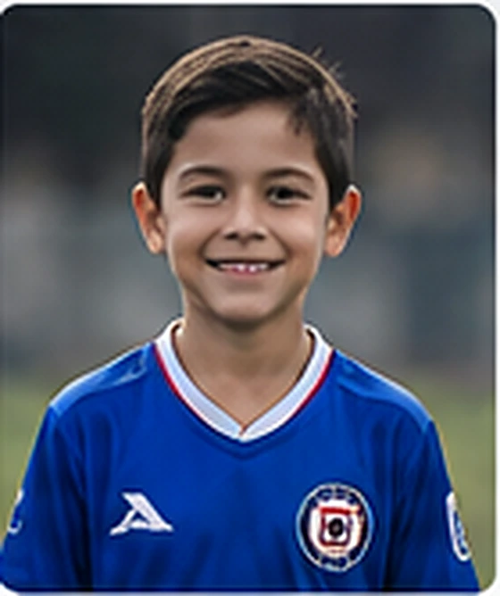
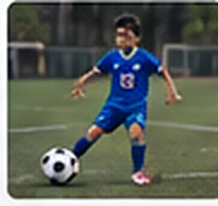
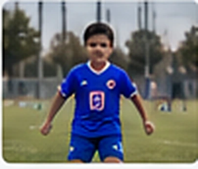
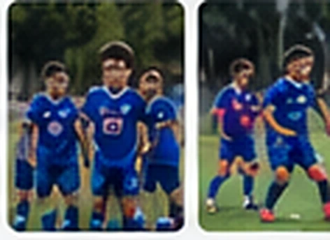
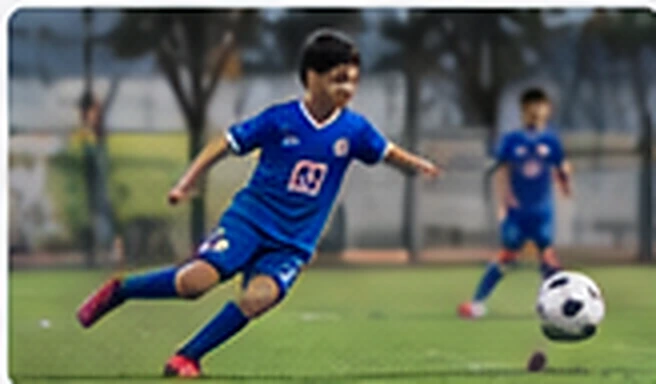

Mi fuerza
¡Nunca rendirme!

Cada jugador tiene una historia especial. Esta es la mía, contada con las cosas que más disfruto del fútbol. Mi perfil de muestra
¡Nunca rendirme!
El trabajo en equipo
Ser futbolista profesional
Cruz Azul Tultepec



